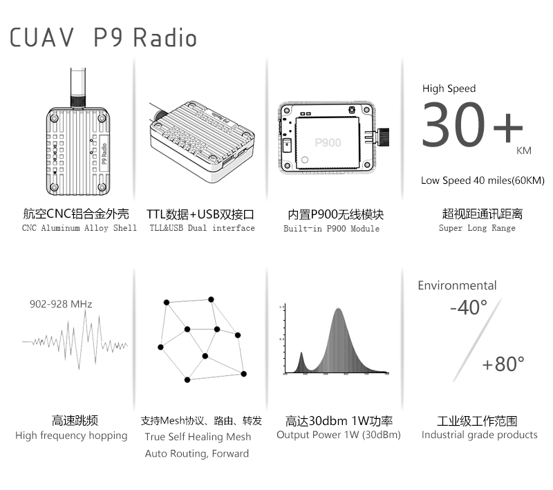
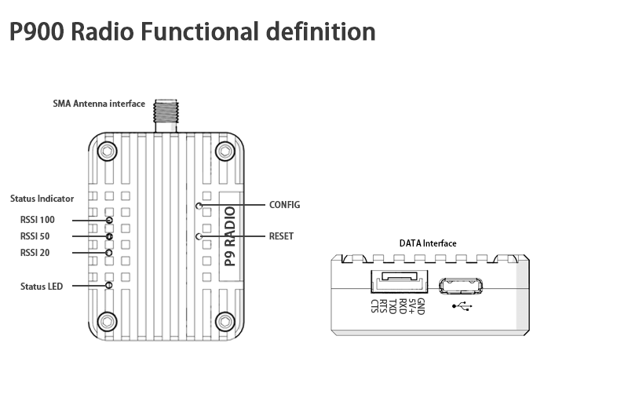

CUAV P9 Radio
Summary:
P9 Radio is a new line-of-sight drone data link communication module from CUAV. It features high power, high speed, and high receiver sensitivity, making it ideal for use in drone communications systems.
Features:

Technical Specifications:
| working frequency | 902-928 MHz |
|---|---|
| Transmission technology | frequency hopping |
| Forwarding error detection | Hamming /BCH/Golay/Reed-Solomon |
| error detecting | Error Detection 32 bits of CRC, ARQ |
| encrypt | Optional (see –AES option) |
| range | 40 mile ( s ) (60 km) |
| sensitivity | -110 dBm @ 115.2 kbps |
| -108 dBm @ 172.8 kbps | |
| -107 dBm @ 230.4 kbps | |
| output power | 100mW - 1W (20-30dBm) |
| serial interface | 3.3V CMOS TTL |
| Baud rate | 57600（Changeable） |
| Airspeed | 115 - 276 kbps |
| operator schema | Mesh, Auto Routing, Store and Forward,Self Healing, Packet Routing Modes |
| Blocking | +/- 1 MHz > 55 dBc |
| +/- 2.5 MHz > 60 dBc | |
| +/- 5 MHz > 65 dBc | |
| > 930 MHz > 70 dBc | |
| < 890 MHz > 70 dBc | |
| Remote Diagnostics | Battery Voltage, Temperature, RSSI,Packet Statistics |
| service voltage | 5.0V + -0.25V |
| Interface current | Sleep < 1mA |
| Idle 3.5mA | |
| Rx: 35mA to 80mA | |
| Tx : 800mA to 1200mA | |
| Connectors: | |
| Antenna interface | SMA |
| interface | GH1.25-6P&USB |
| Environmental | -55o C - +85o C |
| Weight | 51.2MM*38.2MM*15.5MM |
| Order Option s | |
| -AES | 128-bit AES Encryption (requires permit for export outside of Canada and USA.) |
| -ENC | Enclosed Model |
Interface definition ：
